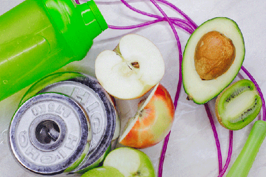

Marathon Training Nutrition and Hydration
Developing a Nutrition Plan
When planning to train and run in a marathon, nutrition can be a component that is overlooked. Marathon trainers are meticulous when creating a training plan that is centered on running and strength training, but nutrition components may be absent from the plan. Proper nutrition is an essential ingredient in marathon training to fuel workouts, optimize a runner's performance, and aid in recovery.
Marathon nutrition starts before the marathon race. Marathon running consumes a lot of calories or fuel necessary for optimal performance. A runner may burn 100 calories per mile; therefore, 1500 calories may be used after running 15 miles. If this crucial fuel is not readily available, then the body will break down muscles to obtain fuel. It is therefore important to ensure that enough calories are consumed to avoid muscle breakdown. Consequently, eating breakfast before running is important to provide fuel for the body.
When planning a marathon diet, it is important to incorporate three ingredients: carbohydrates, protein, and fats. Carbohydrate is a macronutrient that should be the largest portion of your diet. Set a goal of consuming 3.5g - 4.5g per pound of body weight. For a person of 120 lbs, this amounts to 420g - 540g per day. On lighter training days or rest days, eat 3.0g - 3.5g of carbohydrates. Choose complex carbohydrates such as whole grains, beans, and vegetables.
Protein is a maconutrient that helps to replenish muscle breakdown and aids in muscle recovery. On training days, aim for .7g - 1.0g per pound of body weight. On non-training days aim for .5g - .7g per pound of body weight.
Fat is a macronutrient necessary for vitamin storage and hormone production. Maintain a goal of no more than .5g per pound of body weight on training and non-training days. Contrary to common views of fat as bad, unsaturated fats such as olive oil, nuts, seeds, and fish are extremely beneficial to a healthy diet.
Three days of sample meals from the Marathon Meal Training Plan: Click here The complete meal plan can be accessed in Thomas Watkins' article, 10 Rules of Marathon Training Nutrition.
Here are some additional tips to consider when adding nutrition to your training program: determine the snacks that will be provided at the aid station during the race. Implement these foods during marathon training to learn which foods work best for you. This method avoids experiencing any digestive issues happening on race day. Eat a familiar breakfast three to four hours before you start.
Hydration
A crucial component of marathon training is hydration. It is key to maintain performance and to prevent dehydration which could lead to serious health consequences. Therefore, it is important to make sure it is an active part of one's marathon training plan. The hydration plan should focus on daily hydration, pre-run hydration, during the run, and post-run.
- Daily Hydration:
- Set a daily goal to drink 8-10 cups of water; adjusting based upon training intensity, sweat rate, and climate.
- Pre-run Hydration:
- Drink water 2-4 hours before you run; if your run is intense or hot conditions, consider adding a small amount of sodium to help with water retention.
- During the Run:
- Aim to drink small amounts of water regularly; for runs longer than 60 minutes, drink water or sports drinks that contain electrolytes.
- Post-Run Hydration:
- Rehydrate within 30 minutes after the run; include fluids with electrolyes to replenish what has been lost through sweat.